Next: 7.3 Estimating the Error Up: 7. The fit Command: Previous: 7.1 Notation Contents Index
Bayes' Theorem states that:
| 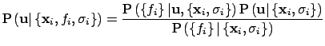 | (7.1) |
Since we are only seeking to maximise the quantity on the left, and the
denominator, termed the Bayesian evidence, is independent of
 , we can neglect it and replace the equality sign with a
proportionality sign. Furthermore, if we assume a uniform prior, that is, we
assume that we have no prior knowledge to bias us towards certain more favoured
values of
, we can neglect it and replace the equality sign with a
proportionality sign. Furthermore, if we assume a uniform prior, that is, we
assume that we have no prior knowledge to bias us towards certain more favoured
values of
 , then
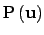 is also a
constant which can be neglected. We conclude that maximising
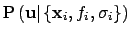 is
equivalent to maximising
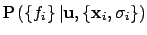.
, then
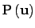 is also a
constant which can be neglected. We conclude that maximising
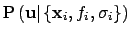 is
equivalent to maximising
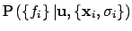.
Since we are assuming 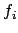 to be Gaussian-distributed observations of the true function 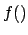, this latter probability can be written as a product of 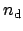 Gaussian distributions:
| 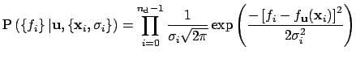 | (7.2) |
The product in this equation can be converted into a more computationally workable sum by taking the logarithm of both sides. Since logarithms are monotonically increasing functions, maximising a probability is equivalent to maximising its logarithm. We may write the logarithm 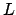 of as:
![$\displaystyle L = \sum_{i=0}^{n_\mathrm{d}-1}
\left( \frac{
-\left[f_i - f_\mathbf{u}(\mathbf{x}_i)\right]^2
}{
2 \sigma_i^2
} \right) + k$](img118.png) |
(7.3) |
where  is some constant which does not affect the maximisation
process. It is this quantity, the familiar sum-of-square-residuals, that we
numerically maximise to find our best-fitting set of parameters, which I shall
refer to from here on as
is some constant which does not affect the maximisation
process. It is this quantity, the familiar sum-of-square-residuals, that we
numerically maximise to find our best-fitting set of parameters, which I shall
refer to from here on as
 .
.
Dominic Ford, 24 November 2006